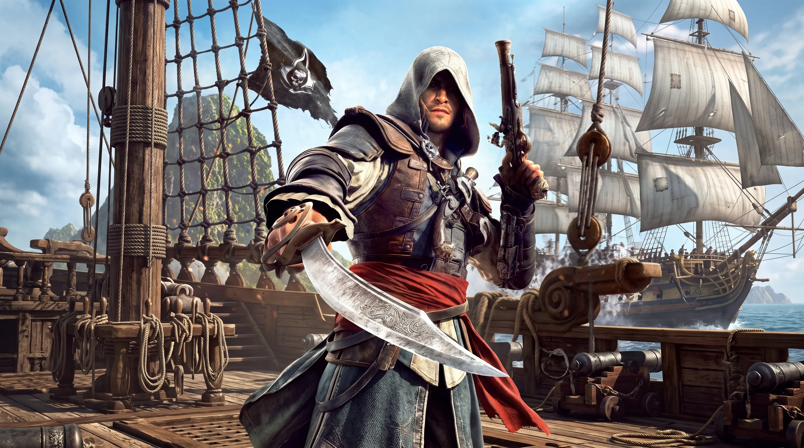

Assassin's Creed Black Flag Resynced Is Out Now: Inside Ubisoft's RTGI, Strand Hair & Seamless Caribbean Remake on PS5

Assassin's Creed Black Flag Resynced is out now on PlayStation 5, Xbox Series X|S, and PC, and the short version is this: it's a full ground-up remake of the 2013 pirate classic, not a remaster, built on the same advanced version of Ubisoft's Anvil engine that powered Assassin's Creed Shadows. Every asset has been rebuilt with physically based rendering and a new micropolygon geometry pipeline, ray-traced global illumination runs in every graphics mode on every console including Xbox Series S, and the entire Caribbean — cities, jungle, and open ocean alike — now streams together as one continuous world with no loading screens between islands.
Technical director Jussi Markkanen and Anvil engine architect Nicolas Lopez have been unusually candid about how that transformation happened, walking through the new lighting model and the water rendering overhaul across a run of pre-launch interviews and a dedicated PlayStation Blog deep dive. What emerges is a rebuild that genuinely shares zero code with the 2013 original, led primarily by Ubisoft Singapore with support from more than a dozen additional Ubisoft studios. For a series that's taken plenty of criticism over asset reuse in recent years, that's a meaningfully different starting point, and it shows in the early numbers: Ubisoft's leadership has confirmed pre-orders ranked among the strongest in franchise history, with Steam pre-orders alone reportedly running several times higher than Assassin's Creed Shadows.
How Ubisoft Rebuilt Black Flag Resynced From Scratch — PBR, Micropolygon Geometry & Zero Reused Code
Ubisoft didn't patch or upscale the original Black Flag — the team rebuilt it entirely on the latest Anvil engine, and Markkanen has been blunt that virtually nothing from 2013 survived the transition. Every character model, prop, and building was remade using physically based rendering, the same material-accuracy standard used across modern Anvil titles, so surfaces like weathered wood, wet stone, and tarnished metal now react to light the way they actually would in the real world.
The bigger technical shift sits underneath that, in what Lopez describes as Anvil's micropolygon geometry pipeline. Rather than swapping between a handful of fixed-detail models as the camera moves closer or farther away — the classic "pop-in" problem older open-world games are known for — geometry is now continuously refined based on distance and camera angle, with tiny geometric clusters streamed directly off the PS5's SSD in real time. It currently handles static opaque environment geometry rather than characters or foliage, but it's the same foundational tech Ubisoft has signaled it will keep expanding across future Anvil titles.
None of that rebuilding touched the story Ubisoft was most protective of. Markkanen has said the team deliberately kept Edward Kenway's original narrative arc intact rather than rewriting it, layering new side quests, secrets, and character content around that same spine instead. It's a conservative choice, and it's the right one: Black Flag's pacing and character writing were the strongest parts of the 2013 game, and a technical remake is the wrong place to also gamble on a rewritten plot. Where Ubisoft did add scope is optional content — expect the main story to run close to 25 hours, with meaningfully more if you chase the new side content.
RTGI on Every Console — How Black Flag Resynced Runs Ray Tracing on PS5, PS5 Pro & Xbox Series X|S
Ray-traced global illumination is switched on in every graphics mode on both PS5 and PS5 Pro — Performance, Balanced, and Fidelity alike — so light bounces off surfaces in real time instead of relying on the precomputed lighting the 2013 original used. Ray-traced specular reflections, which handle wet wood, metal, and ocean spray, are more selective: they run in Balanced and Fidelity modes on base PS5, and across all three modes on PS5 Pro, which also gets an extended ray-tracing budget for richer lighting and reflection quality at higher, more stable performance targets.
Getting ray tracing onto Xbox Series S at all was reportedly the harder engineering problem. Markkanen has pointed to memory, not raw compute, as the bottleneck that kept Series S without ray tracing in Assassin's Creed Shadows, and the team says it clawed back enough memory headroom on Black Flag Resynced to bring RTGI to Series S as well. PS5 Pro owners additionally get the latest version of PlayStation Spectral Super Resolution, which narrows the visual gap between Performance and Fidelity modes considerably. The trade-off worth knowing before you pick a mode: Performance mode drops ray-traced reflections entirely and trims hair and foliage draw distance to protect the frame rate, so if reflections and hair fidelity matter more to you than the smoothest motion, Balanced or Fidelity is the better pick.
Also Read
More Gaming stories →Seamless Caribbean — How Ubisoft Killed the Loading Screen Between Every Island and City
In the 2013 original, sailing into Havana, Nassau, or Kingston meant a loading screen every time you docked, and traveling between the outer islands worked the same way. Black Flag Resynced removes that entirely: drop anchor at any pier and you're straight into the city with no transition, because the whole Caribbean — every island, settlement, and stretch of open ocean — now runs as a single continuous space instead of a set of separately loaded zones.
Getting there wasn't simply a matter of switching on better streaming tech. Lopez has described the original Black Flag map as a set of disconnected pieces that were never built to sit next to each other at a consistent scale, which meant the team had to re-examine and subtly adjust how individual islands fit together once they were stitched into one unified world, all while preserving what longtime players remember about each location. It's meticulous, unglamorous work, and it's exactly the kind of detail that separates a genuine remake from a re-skinned remaster: the destinations look the same, but almost everything about how you get there under the hood has changed.
Water, Hair & Stealth — The Systems That Got the Biggest Overhaul in Black Flag Resynced
Water has always been Black Flag's signature, and it's had the most extensive rework of any single system. The ocean now runs on a fully modernized, physically based rendering pipeline with a new tessellation technique, volumetric foam generation, and dynamic bubble systems layered on top, all driven by Atmos — Anvil's systemic weather simulation, carried over and expanded from Assassin's Creed Shadows. Atmos doesn't just decide when it rains; it simulates temperature, humidity, wind, and vapor density as interconnected variables, and that same simulation drives how sails, cloth, foliage, and even character hair respond to wind in real time.
That hair is worth calling out on its own. The strand-based hair system introduced in Shadows returns here and goes further: on PS5 Pro, Edward gets full strand simulation in every graphics mode, nearby crowd characters get it too in Fidelity mode, and cinematics use it for every character regardless of which mode you're playing in. Stealth got a comparable pass — Edward can now crouch anywhere rather than only in scripted cover, Observe mode carries over from Shadows to help track targets, lighting and shadow genuinely affect how visible you are, and social stealth returns with a twist: blending into any group of three or more civilians will hide you, at the cost of losing precise control over exactly where you're standing. Free diving is no longer limited to the marked diving-bell locations from the original either — you can dive anywhere along the coastline now, which the team has used to seed new shipwrecks and underwater secrets across the map.
PS5 vs PS5 Pro vs PC — Every Black Flag Resynced Resolution Target & Frame Rate, Explained
Black Flag Resynced doesn't lock every PS5 mode to 60fps — it follows the same three-mode structure Ubisoft used for Shadows. Performance mode targets 60fps at a dynamic 1080p, Balanced targets 40fps at a dynamic 1280p, and Fidelity targets 30fps at a dynamic 1440p, with all three modes reconstructed upward via TAAU and all three keeping RTGI switched on. Ubisoft says the average resolution across all three modes should land higher than it did in Shadows, which tracks with the extra year of engine optimization between the two games.
PS5 Pro keeps the same three mode names but raises the ceiling under each one, with extended ray-tracing support and PSSR reconstruction available across the board rather than only in the higher tiers. PC is where the ceiling disappears entirely: Ubisoft's official specs scale from a GTX 1660 running 1080p/30fps on Low all the way up to an RTX 4090 or RX 7900 XTX pushing native 4K/60fps on the Extreme preset with Extended ray tracing, and frame rates are uncapped in both gameplay and cutscenes for hardware that can push past the listed targets. If you're deciding where to play, PS5 Pro is the least fuss for the best average result, while PC is the only place to meaningfully exceed 60fps.
PC Features — Black Flag Resynced System Requirements, Ray Tracing Modes & Upscaler Support
Ubisoft's official PC requirements span four presets, and the minimum bar is higher than the original 2013 release by a wide margin. The Low preset targets 1080p at 30fps on a GTX 1660 (6GB) or Ryzen 5 3600-class CPU, and even that floor requires Standard ray tracing and 16GB of dual-channel RAM — this isn't a game you can run without ray-tracing-capable hardware. Recommended steps up to 1080p/60fps on an RTX 3060 or RX 6600 XT, High targets 1440p/60fps on an RTX 3080 or RX 6800 XT, and the Extreme preset asks for an RTX 4090 or RX 7900 XTX to hit native 4K/60fps with Extended ray tracing, which layers ray-traced reflections on top of the baseline global illumination. Every tier requires installation on an SSD; Ubisoft doesn't support running the game from a mechanical hard drive.
Where the PC version pulls ahead of consoles is flexibility rather than one headline feature. All three major upscalers are supported — NVIDIA DLSS 4.5, AMD FSR 4, and Intel XeSS 3 — alongside frame generation, HDR, ultrawide aspect ratios, and a genuinely uncapped frame rate in both gameplay and cutscenes for anyone with the hardware to push past 60fps. Ubisoft also shipped dedicated presets for Steam Deck and similar handhelds, a built-in benchmark tool for dialing in settings before you commit, and a software ray-tracing fallback for GPUs without hardware RT support. My honest take: the PC version is the only version where you can genuinely max the game out, but the entry cost to run it well is real, so budget for at least an RTX 3060-class card before choosing PC over a PS5 Pro purely for horsepower.
Key Takeaways
- Black Flag Resynced is a ground-up Anvil engine remake that shares zero code with the 2013 original — it's not a remaster.
- RTGI runs in every graphics mode on every console, including Xbox Series S, with the whole Caribbean streaming as one seamless world.
- PS5 targets 60/40/30fps across Performance, Balanced, and Fidelity modes; PC scales from a GTX 1660 all the way to an RTX 4090 at native 4K.
Frequently Asked Questions
Is Assassin's Creed Black Flag Resynced a remake or a remaster?
It's a full remake, not a remaster. Ubisoft has said the game shares zero code with the 2013 original and was rebuilt from the ground up on the latest version of the Anvil engine, with every asset remade using physically based rendering, a new micropolygon geometry pipeline, and RTGI running in every mode on every platform.
What frame rate does Black Flag Resynced run at on PS5?
PS5 offers three modes: Performance targets 60fps at a dynamic 1080p, Balanced targets 40fps at a dynamic 1280p, and Fidelity targets 30fps at a dynamic 1440p, all reconstructed via TAAU. RTGI stays on in every mode, but ray-traced reflections and the full hair and foliage detail are reserved for Balanced and Fidelity.
Does Black Flag Resynced support ray tracing on every console, including Xbox Series S?
Yes. Ubisoft's technical director has said the team specifically targeted the memory bottleneck that kept ray tracing off Xbox Series S in Assassin's Creed Shadows, freeing up enough headroom to bring RTGI to Series S as well in Black Flag Resynced.
Is the Black Flag Resynced Caribbean really one seamless world with no loading screens?
Yes. The original game loaded a new zone every time you docked at a major city or sailed between islands. Resynced merges every location, including cities, jungle, and open ocean, into one continuously streamed world, so there's no loading screen between any two points on the map.
What are the PC system requirements for Black Flag Resynced?
The minimum preset needs a GTX 1660 (6GB) or RX 5500 XT, an i7-8700K or Ryzen 5 3600, 16GB of RAM, and 65GB of SSD storage for 1080p/30fps with Standard ray tracing. The top Extreme preset asks for an RTX 4090 or RX 7900 XTX for native 4K/60fps with Extended ray tracing. All presets support DLSS 4.5, FSR 4, XeSS 3, and frame generation.
How does Black Flag Resynced compare to Assassin's Creed Shadows technically?
It builds directly on Shadows' version of the Anvil engine and pushes several systems further. Independent technical reviews have found Havana's environmental density exceeds Shadows' most detailed city areas, and the strand-based hair system from Shadows returns with an expanded role, including crowd characters in PS5 Pro's Fidelity mode.
Conclusion
Judged purely on the technical rebuild, Black Flag Resynced does what a remake is supposed to do: it makes a strong case for revisiting a game some players have already finished twice, without pretending the original needed a new story to justify the trip. The seamless Caribbean and the RTGI-everywhere lighting are the two changes you'll notice in the first five minutes; the micropolygon geometry pipeline and the reworked water system are the two you'll appreciate more the longer you play. None of it is free of trade-offs — Performance mode gives up reflections and hair fidelity to hold 60fps, and the PC version's ray-tracing-capable minimum spec will price out some older rigs — but those read as honest engineering compromises rather than corners cut.
If you're deciding whether to jump in: console players chasing the smoothest experience should lean toward PS5 Pro for its wider ray-tracing coverage across all three modes, base PS5 owners still get a genuinely solid remake as long as they're comfortable choosing between frame rate and fidelity, and PC remains the only platform where you can push past 60fps or run native 4K, provided your GPU clears the Extended ray-tracing bar. Assassin's Creed Black Flag Resynced launched July 9 on PlayStation 5, Xbox Series X|S, and PC via the Ubisoft Store, Steam, and the Epic Games Store.

Marcus J. Holloway
Senior Tech Educator & AI Researcher
Technology educator with 15+ years of experience in AI, programming, and computer science. Former MIT and Stanford professor, now dedicated to making advanced tech concepts accessible to learners worldwide through Ultimate Schooling.
💬 Questions or Comments?
Have a question about this tutorial or want to share your thoughts? Leave a comment below!